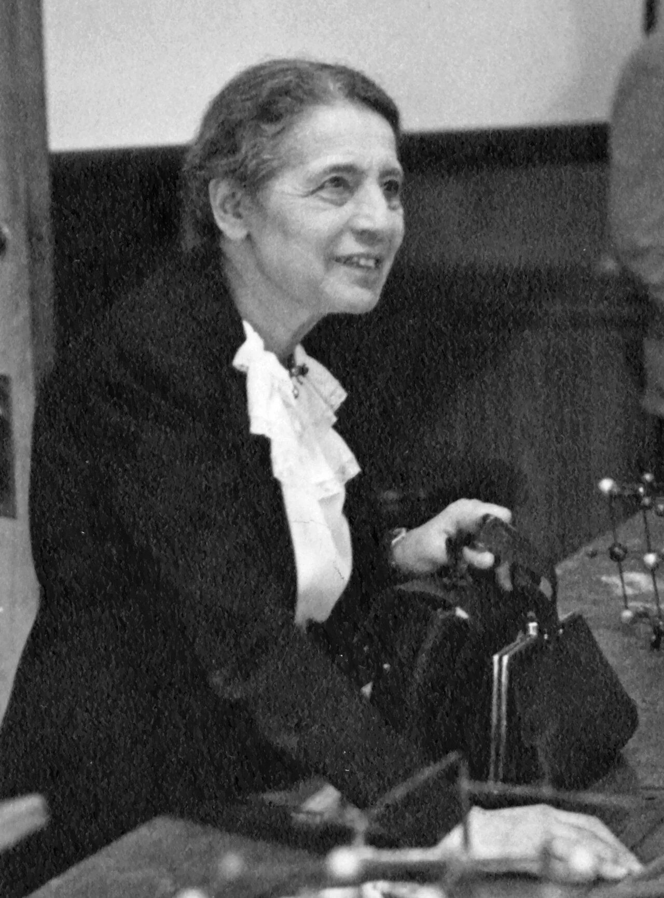
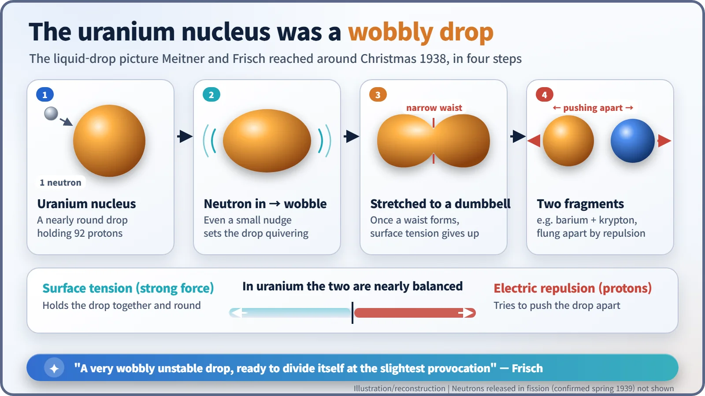
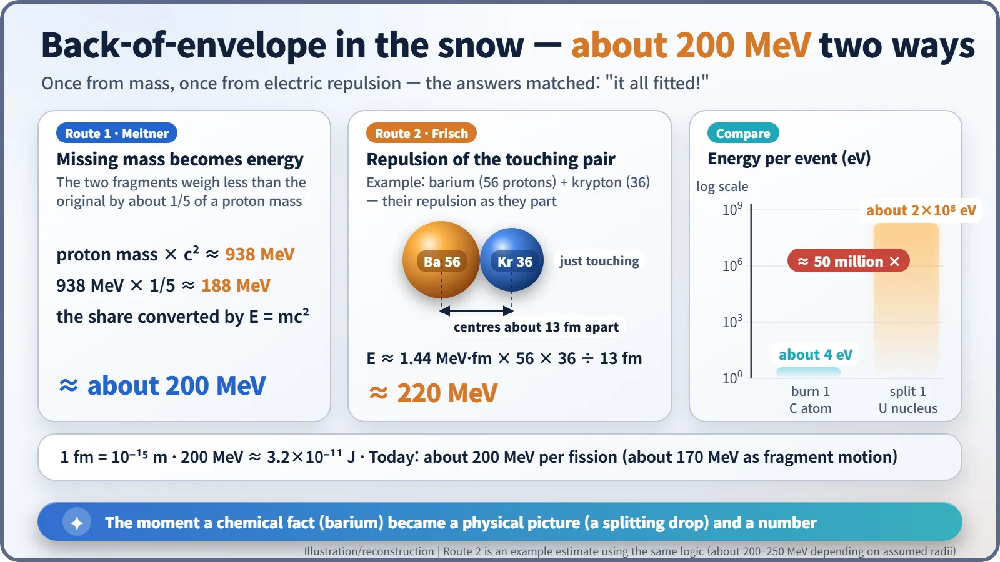
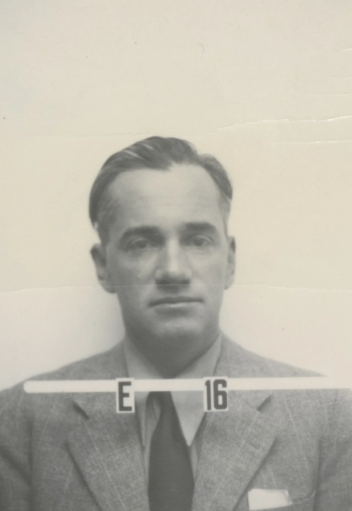

Nuclear History · 062
Calculations on a Snowy Walk — Meitner and Frisch Explain Nuclear Fission (1938–1939)
A liquid-drop picture and two back-of-the-envelope sums, one from electric repulsion and one from missing mass, turned a puzzling chemical result into the discovery of nuclear fission.
Around Christmas 1938, on a snowy walk in the Swedish town of Kungälv, Lise Meitner and her nephew Otto Frisch worked out what Otto Hahn's puzzling barium result meant: the uranium nucleus behaves like a wobbly liquid drop that can split in two. Two quick estimates, one from electric repulsion and one from missing mass, both gave about 200 MeV per split, and on 13 January 1939 Frisch saw the fragments' huge pulses in the lab.
Two walkers in the snow
A 34-year-old man glides ahead on skis; his 60-year-old aunt follows on foot. She had insisted she could keep up just as well without skis, and, as he later remembered, she did. This is a snowy path in Kungälv, a small town north of Gothenburg on Sweden's west coast, around Christmas 1938. The aunt is the refugee physicist Lise Meitner (1878–1968). The nephew is Otto Robert Frisch (1904–1979), who worked at Niels Bohr's institute in Copenhagen. Both had a letter from Berlin on their minds. [3] [4]

Barium? That makes no sense
The letter came from Meitner's long-time colleague Otto Hahn, dated 19 December. He and Fritz Strassmann had fired neutrons at uranium and found barium among the products. In the physics of the day, a nuclear reaction meant chipping a small piece off a nucleus: a proton, perhaps an alpha particle. Barium, though, is roughly 60% as heavy as uranium. The nucleus had not been chipped; it had come apart almost in the middle. Frisch's first thought was that Hahn had made a mistake. Meitner would not hear of it: Hahn was far too good a chemist for that. [4]
Think of a drop, not a chisel
As Frisch later told it, the breakthrough came when they stopped picturing a nucleus being cleaved in two, as if with a chisel, and turned instead to Niels Bohr's liquid-drop picture of the nucleus. [3]
The particles in a nucleus are held together by the strong nuclear force, which acts much like the surface tension that keeps a water droplet round. Against it, the protons all carry positive charge and push one another away. In uranium, with 92 protons, the two effects very nearly cancel. So a single extra neutron can set the drop wobbling; it stretches, develops a waist like a dumbbell, and once the waist is narrow enough, surface tension loses and the drop splits in two. Frisch described the uranium nucleus as "a very wobbly unstable drop, ready to divide itself at the slightest provocation." [6]

Sums on a tree trunk
According to a story often told, they sat down on a fallen tree trunk and started scribbling on scraps of paper.
Frisch estimated the electric repulsion between the two fresh fragments at the moment they were just touching. You can follow the same logic yourself with an example pair, barium (56 protons) and krypton (36). Put their centres about 13 femtometres apart (a femtometre is a millionth of a billionth of a metre) and the Coulomb energy comes out at 1.44 × 56 × 36 ÷ 13, or about 220 MeV. In other words, roughly 200 MeV. [1] [4]
But where does that energy come from? Here Meitner supplied the answer. She remembered an empirical formula for nuclear masses and worked out that the two fragments together would be lighter than the original nucleus by about one-fifth of the mass of a proton. A proton's mass is equivalent to about 938 MeV, so a fifth of it is close to 190 MeV. Einstein's E = mc² turns that missing mass into energy, and the two routes gave the same size of answer. "So here was the source for that energy," Frisch recalled; "it all fitted!" [5] [6]

How big is 200 MeV? Compare it with a lump of charcoal. When one carbon atom burns to carbon dioxide, it releases about 4 electronvolts. A single fission releases about fifty million times as much. Today's figure for one uranium-235 fission is about 200 MeV in total, of which about 170 MeV goes into the motion of the two fragments.
Big pulses at 3 a.m.
On 1 January 1939 the pair went home, Meitner to Stockholm and Frisch to Copenhagen. On 3 January Frisch explained the idea to Bohr, who, in Frisch's memory, struck his forehead and said: "Oh, what fools we have been! We ought to have seen that before." (Other versions say "idiots".) [3] [4]
Words were not enough. Frisch assembled a small ionisation chamber lined with uranium and a pulse amplifier. If uranium nuclei really split, the energetic fragments would rip through the gas in the chamber and leave electrical pulses far larger than any known particle could produce. At about 3 a.m. on Friday 13 January, the big pulses appeared on his oscilloscope. Some four hours later a telegram arrived: his father had been released from the Dachau concentration camp. [2] [3]
Two short letters, one complete discovery
On 16 January the joint interpretation and Frisch's experimental note were posted to Nature together. They appeared on 11 and 18 February 1939. The new process also needed a name; Frisch borrowed "fission" from the biologists' term for cell division, a story worth telling separately. [1] [2]

The walk in the snow produced back-of-the-envelope estimates, not a finished theory. A quantitative account of why some nuclei split more easily came only that autumn, and nobody yet knew how many neutrons each fission releases. Still, it was this interpretation that turned Hahn and Strassmann's chemical fact (barium) into a physical picture (a splitting drop) and a number (about 200 MeV), and with that, the discovery was complete.